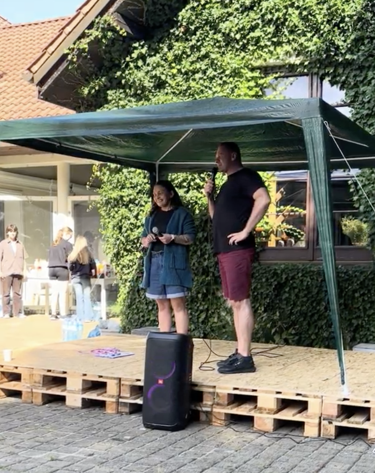
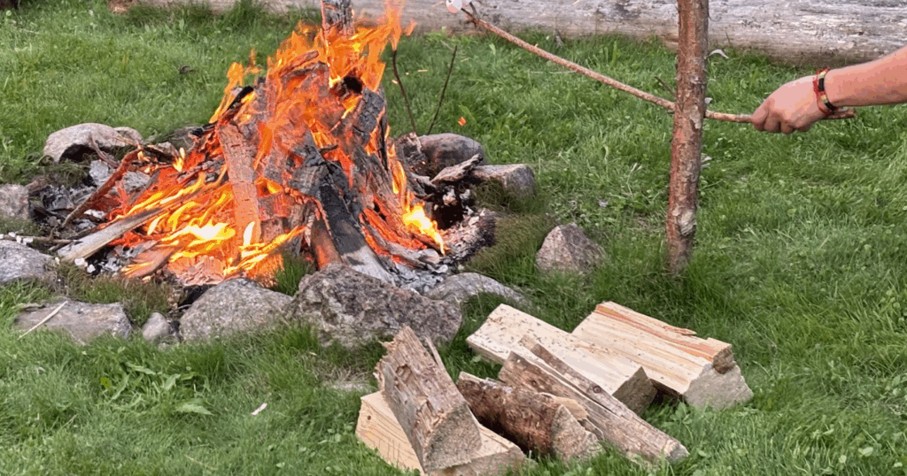
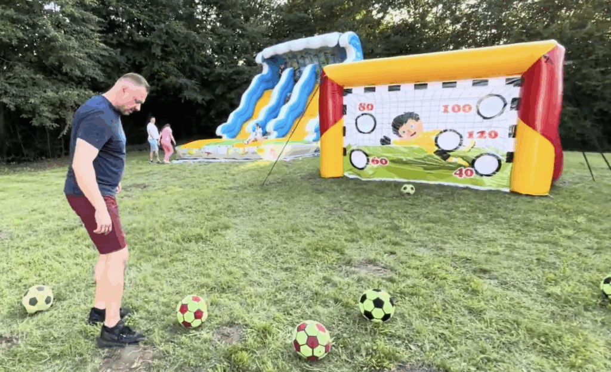
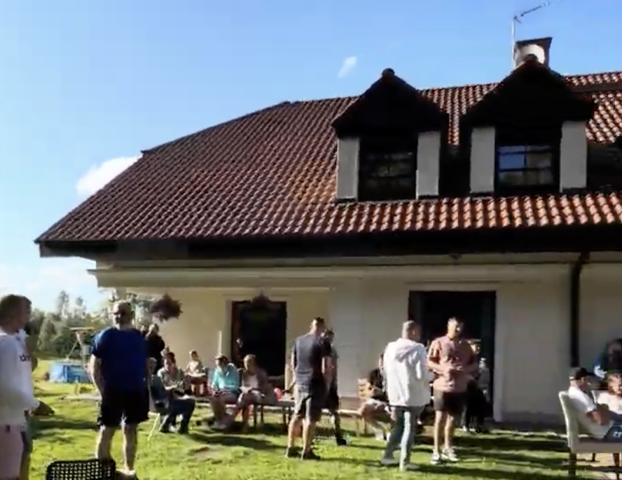

I Festiwal Trzeźwości
Pierwsza edycja Festiwalu Trzeźwości odbyła się w 2024 roku na terenie Ośrodka MyWay w Kąpinie. To był początek tradycji — spotkanie pacjentów, rodzin i przyjaciół ośrodka w atmosferze radości i wsparcia.
Wydarzenie pokazało, że trzeźwość można celebrować. Że można bawić się, tańczyć, śmiać — bez alkoholu. I że ludzie tego potrzebują.
Zdjęcia z I edycji 📸




Pierwsza edycja dała fundament pod to, co robimy teraz. Scena z palet, ognisko, bramka dmuchana — wszystko zaczęło się tu. Pokazała, że jest zapotrzebowanie na przestrzeń wolną od używek.
Sukces I edycji sprawił, że w 2025 zorganizowaliśmy II Festiwal — większy, z większą liczbą atrakcji i gości. A w 2026 wracamy z III edycją i koncertem Backstage.
Zobacz III edycję — 8 sierpnia 2026 →